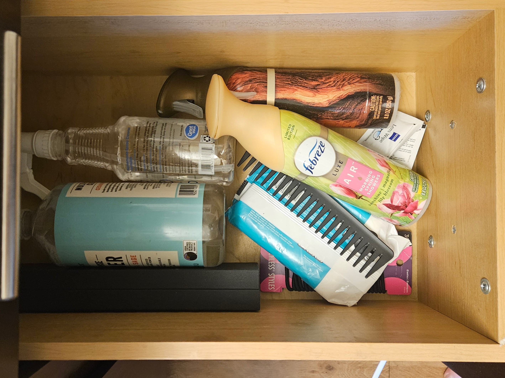

5S My Bathroom
How I applied the principles of the Toyota Production System to transform a cluttered bathroom into a clean, organized space, the first step in my journey to 5S My Life.
Read More →How I applied the principles of the Toyota Production System to transform a cluttered bathroom into a clean, organized space, the first step in my journey to 5S My Life.
Read More →
How I combined Lean principles with technology to create a personalized warehouse management system using Python, Raspberry Pi, and a Kindle scanner, bringing 5S into the digital age.
Read More →